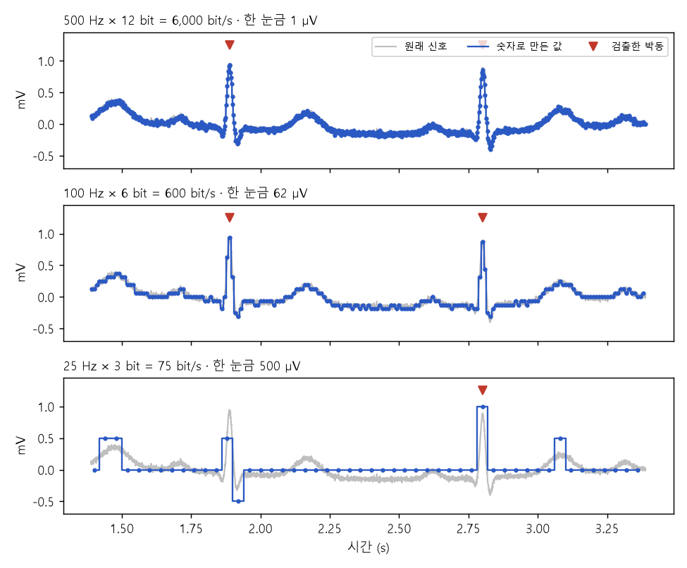
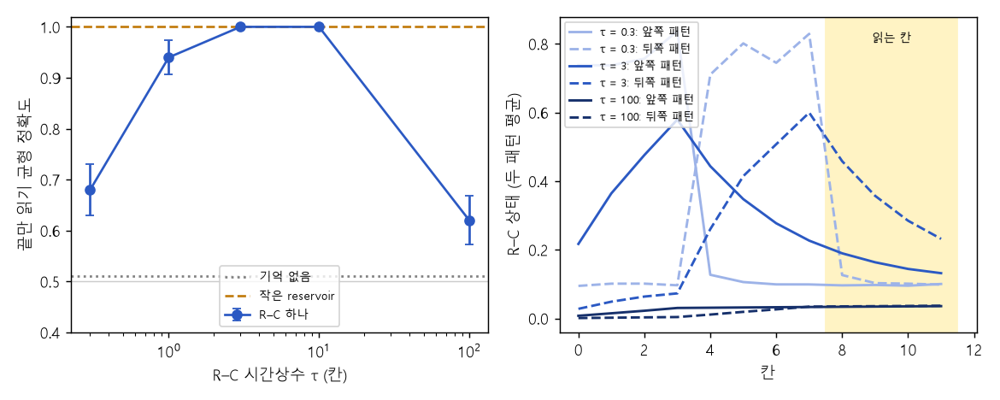

S. 신호를 숫자로, 기억을 숫자로 — 장비 없이
PC 한 대로 bit·샘플링률과 시간상수가 무엇을 바꾸는지 직접 숫자로 확인한다
- 준비물: Windows PC, Python 3.11 이상, 코드 묶음 zip. 소재·소자·장비가 필요 없습니다.
- 걸리는 시간: S1, S2 각각 30–45분 (처음 Python 설치는 별도).
- 끝나면 얻는 것: 설정별 데이터량·박동 판정 표와 그래프(S1), 기억 없는 모델·R–C·작은 reservoir를 비교한 그래프(S2).
- 완료 기준: 명령이 끝까지 돌고, 표에서 한 줄을 골라 "왜 이 숫자가 나왔는지" 한 문장으로 적으면 끝입니다. 결과가 예상과 달라도 끝입니다.
이 프로젝트가 묻는 것: 데이터량을 줄이면 무엇을 잃는가(S1). '기억이 있다'와 '과제에 쓸모 있는 기억'은 어떻게 다른가(S2). 둘 다 이온 소자를 평가할 때 쓸 기준선입니다. 소자 결과를 볼 때 "ADC 설정만 바꿔도 이만큼 달라진다", "R–C 하나로도 이만큼 된다"를 먼저 알고 있어야 소자의 몫을 가를 수 있습니다.
준비 (처음 한 번)
A0-1과 같습니다. zip을 풀고, ion-projects-code\python 폴더에서 명령 프롬프트를 열고(주소 창에 cmd → Enter), 아래를 실행합니다.
python --version
python -m pip install -r requirements.txtpython --version이 3.11 이상이면 됩니다. 설치는 몇 분 걸립니다.
S1. 같은 신호, 다른 bit·샘플링률
목적. Day 9에서 계산한 "샘플링률 × bit = 1초에 보낼 bit"를 직접 바꿔 보고, 그때 신호 모양과 박동 판정이 어떻게 달라지는지 봅니다.
무엇을 쓰나. 이 스크립트가 만드는 심전도 모양 합성 신호(60초, 박동 74개)입니다. 실제 환자 기록이 아니고, 정답 박동 시각을 알고 있어서 판정이 맞았는지 셀 수 있습니다.
python s1_bits.py runs/s1- 입력: 없음 (신호를 스크립트가 만듦). 바꿀 수 있는 설정:
--fs 25,50,100,250,500(샘플링률 Hz),--bits 3,4,6,8,12,--seed 1. - 출력:
runs/s1/s1_table.csv(설정 25가지의 표),runs/s1/s1_waves.png(그래프). - 예상 화면 (seed 1):
합성 신호 60초, 실제 박동 74개 (seed 1)
25 Hz 3 75 bit/s 500.0 uV 18 56 0 2.5 ms
50 Hz 6 300 bit/s 62.5 uV 66 8 0 4.2 ms
100 Hz 4 400 bit/s 250.0 uV 74 0 0 2.2 ms
500 Hz 12 6000 bit/s 1.0 uV 74 0 0 1.0 ms
비교: 박동마다 사건 하나(16 bit)만 보내면 약 20 bit/s (payload만, 무선 비용 제외)(실제 화면에는 25줄이 다 나옵니다. 열은 차례로 샘플링률, bit, 데이터량, 한 눈금, 맞힘, 놓침, 헛것, 시각 오차.)

관찰할 점.
- 샘플링률이 너무 낮으면 박동 자체를 놓칩니다. R파 봉우리는 폭이 약 20–40 ms입니다. 25 Hz(40 ms마다 한 번)로 집으면 봉우리 사이로 지나가 버리는 박동이 많습니다.
- bit는 이 판정에서 생각보다 덜 중요합니다. 100 Hz에서는 4 bit(한 눈금 250 µV)도 74개를 다 맞힙니다. R파가 1 mV로 커서 거친 눈금으로도 문턱을 넘기 때문입니다. 가정 작은 P파 모양을 봐야 하는 과제라면 결론이 달라집니다.
- 그래서 같은 신호라도 무엇을 판정하느냐가 필요한 샘플링률·bit를 정합니다. 데이터량만 보고 설정을 고르면 안 됩니다.
- 마지막 줄은 Day 9의 사건 메시지(언제 12 bit + 무엇 4 bit)를 박동마다 하나씩 보낸 경우입니다. 연속 전송(수백–수천 bit/s)보다 훨씬 적지만, payload만 센 값입니다. 실제 무선은 패킷 머리말·재전송·수신 대기 비용이 따로 있습니다.
이상할 때. No module named numpy → 준비의 설치 명령. 표는 나오는데 그래프가 없음 → matplotlib 설치 확인. --fs 30 같은 값은 거부됩니다(원래 신호 2,000 Hz의 약수만 됨).
다음 단계 조건. 표에서 "놓침이 0이 되는 가장 낮은 데이터량"을 찾아 적었으면 S2로 갑니다. 더 해 보고 싶으면 --seed 2로 다른 신호에서 같은 결론이 나오는지 봅니다.
S2. 기억 없음 vs R–C vs 작은 reservoir
목적. 같은 시간 패턴을 세 종류의 시스템에 넣고, 끝만 읽어서 두 패턴을 가를 수 있는지 비교합니다. A2에서 실제 소자로 할 과제와 같은 모양입니다.
과제. 12칸 입력에서 높은 값 3개가 앞쪽(0–3칸)이면 패턴 0, 뒤쪽(4–7칸)이면 패턴 1입니다. 8–11칸은 두 패턴이 똑같습니다. 그래서 8–11칸의 상태만 보고 맞힌다면, 그 상태에 앞 입력의 흔적이 남았다는 뜻입니다.
세 시스템.
| 시스템 | 한 칸마다 하는 일 | 기억 |
|---|---|---|
| 기억 없음 | 상태 = 지금 입력 | 없음 |
| R–C 하나 | 상태 = a × 이전 상태 + (1 − a) × 지금 입력, a = e^(−1/τ) | τ 하나로 정해지는 기억 |
| 작은 reservoir | 노드 30개가 서로 연결되어 tanh로 섞임 (Day 7–8의 ESN) | 여러 시간 규모가 섞인 기억 |
python s2_memory.py runs/s2- 바꿀 수 있는 설정:
--taus 0.3,1,3,10,100(R–C 시간상수, 칸 단위),--noise 0.01(읽을 때 더하는 잡음),--n 200(시행 수). - 출력:
runs/s2/s2_table.csv,runs/s2/s2_memory.png. - 예상 화면 (seed 1):
시행 200개, 읽기 잡음 0.01, 끝 4칸(8-11)만 읽기, 찍기 = 0.50
기억 없음 (상태 = 지금 입력) - 균형 정확도 0.51 +/- 0.06 라벨 섞기 0.46
R-C 하나 tau = 0.3칸 균형 정확도 0.68 +/- 0.05 라벨 섞기 0.45
R-C 하나 tau = 1칸 균형 정확도 0.94 +/- 0.03 라벨 섞기 0.54
R-C 하나 tau = 3칸 균형 정확도 1.00 +/- 0.00 라벨 섞기 0.56
R-C 하나 tau = 10칸 균형 정확도 1.00 +/- 0.00 라벨 섞기 0.45
R-C 하나 tau = 100칸 균형 정확도 0.62 +/- 0.05 라벨 섞기 0.46
작은 reservoir (노드 30) rho 0.9, leak 0.3 균형 정확도 1.00 +/- 0.00 라벨 섞기 0.47
관찰할 점.
- 기억 없음은 찍기(0.5) 근처입니다. 끝 4칸 입력이 두 패턴에서 같으니 당연합니다.
- τ가 너무 짧으면(0.3칸) 흔적이 읽기 전에 거의 사라집니다.
- τ가 너무 길면(100칸)도 떨어집니다. 상태가 모든 입력을 오래 더해 두는데, 두 패턴 모두 높은 값이 3개씩이라 합이 비슷합니다. 흔적은 남아 있지만 두 패턴을 가르는 데 쓸 수 있는 차이가 작습니다.
- 그래서 기억이 있다는 것과 이 과제에 쓸모 있는 기억은 다릅니다. τ가 과제의 시간 규모(여기서는 몇 칸)와 맞아야 합니다.
- 작은 reservoir는 여러 시간 규모가 섞여 있어 이 과제에서는 쉽게 1.0이 나옵니다. R–C 하나도 τ만 맞으면 1.0입니다. 실제 소자가 이 과제를 푼다면, 다음 질문은 "R–C 하나보다 무엇이 더 나은가"입니다 (A의 대조군과 같은 질문).
- 라벨 섞기 값이 0.5 근처가 아니면 분석 어딘가에서 정답이 새고 있다는 신호입니다.
더 해 보기 (선택). --noise 0.05로 잡음을 키우면 어느 τ부터 무너지는지, --taus 2,4,6처럼 촘촘히 바꾸면 가장 좋은 τ가 어디인지 봅니다.
다음 단계 조건. 왼쪽 그래프가 산 모양이 되는 이유를 한 문장으로 적었으면 끝입니다. 이어서 A0에서 같은 과제를 '모의 소자'로 측정 흐름에 넣어 봅니다.
코드가 하는 일
두 스크립트 모두 첫머리 설명에 모형의 가정을 적어 두었습니다. 요약하면 다음과 같습니다.
- S1 (s1_bits.py): ADC 입력 범위 ±2 mV, 앞단 저역 통과 필터 없음, 판정은 단순 문턱 검출기(0.2초 이동평균을 빼고 0.5 mV, 불응기 0.25초). 실제 심전도 장치는 필터·증폭·적응형 문턱을 쓰므로 숫자가 다릅니다.
- S2 (s2_memory.py): 한 칸 = 시간 1, 읽을 때 잡음 0.01, 5겹 교차검증, 겹마다 학습 쪽으로만 표준화, ridge 선형 분류. 잡음이 0이면 아주 작은 차이도 구별되어 τ = 100도 높게 나옵니다. 그래서 잡음이 있는 실제 측정을 흉내 냅니다.